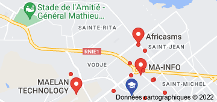

Ecole Nationale d'Economie Appliquée et de Management

L'Eneam est une école qui est chargée de la formation professionnelle de ses étudiants dans les domaines de l'Economie Appliquée et du Management des Organisations.

L' Eneam dispose de plusieurs filières en son sein. Il s'agit notamment de celle de l'informatique.
De ce fait, le service informatique vise l'assurance du développement des TIC; de la mise en place des logiciels dans le but d'optimiser les rendements. Ainsi , nous avions deux branches de l'Informatique au sein de l'ENEAM : l'Administration des Réseaux Informatique et l'Analyse Informatique et Programmation.
L'Administration des réseaux Informatiques est une dixcipline qui s'apprend et le but de ce cours est de donner aux étudiants un minimum d'éléments leur permettant par la suite d'orienter leur apprentissage dans la bonne direction. Elle se refaire aux activités , methodes comme surveillance d'un réseau . Ses objectifs sont la supervision du fonctionnement des réseaux ; l'optimisation pour l'utilisation des ressources ; la détection et la prévision des erreurset le support technique pour utilisateur.
L'Analyste programmeur conçoit et fait évoluer des applications informatiques. Pour ce fait , il écrit des lignes de code dans un language de programmation informatique et élébore des algorithmes, le tout en se référant à un cahier des charges. Un Programme Informatique est un ensemble d'opération destinées à être exécutées par un ordinateur (outil d'un informaticien).
L'ENEAM est donc une Ecole qui apprend à ses futurs informaticiens la Gestion de l'Informatique.